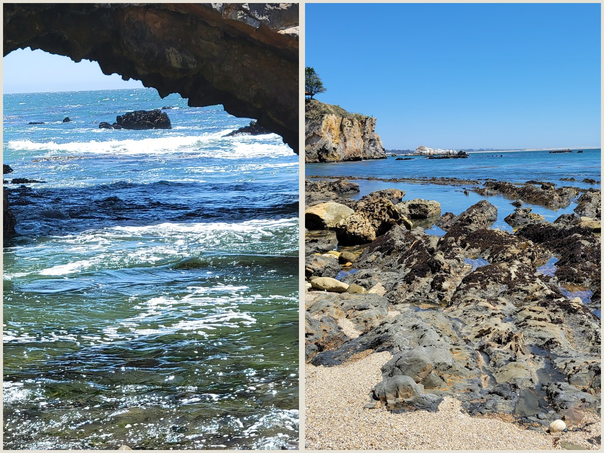

Latest Journey

Featured
California Central Coast, Part 2
Exploring the California Central Coast - Spring 2026.
Read journal →All Journals

Paso Robles Wine Country
A week exploring the central coast: Heart Castle, Hikes, Tide Pools, etc.
Read journal →

California Central Coast, Part 1
Exploring the California Central Coast during spring.
Read journal →

April Showers, Kirkwood-style
Snow in April is not uncommon in Kirkwood, but this year we had a couple of unusually large storms for that time of year.
Read journal →